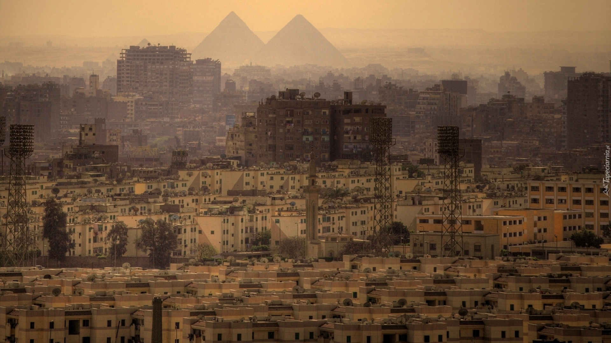
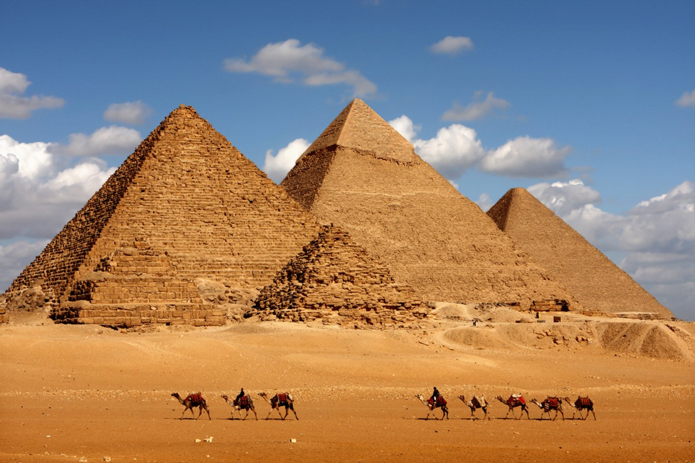

Kair
Rzym Stambuł

Wielki Kair leży po obu brzegach Nilu oraz na licznych wyspach na rzece, nieco na południe od miejsca, w którym Nil przechodzi w deltę. Metropolia składa się z dwóch miejskich guberni: Kairu i Gizy tworząc jeden organizm miejski. Miasto dzieli się na 14 dzielnic. Najstarsza dzielnica miasta leży na wschodnim brzegu Nilu. Dalej, miasto rozpościera się na zachód, zajmując dawne tereny rolnicze. Zachodnie dzielnice zbudowano w XIX w., w nawiązaniu do wzorców zachodnioeuropejskich (m.in. Paryża po roku 1870), i dlatego więcej jest tam szerokich alei, zieleni i otwartych przestrzeni. Natomiast stare, wschodnie dzielnice, mają zupełnie odmienny wygląd: gęsta zabudowa, małe, zatłoczone alejki, kończące się często ślepymi zaułkami. Dlatego większość biur i budynków rządowych mieści się w zachodniej części miasta, a dzielnice wschodnie cechuje duża liczba zabytkowych meczetów. Miasto rozszerza się także na tereny pustynne. Obydwa brzegi Nilu spięły mosty. Przy pomocy mostów połączyły się z lądem stałym również wyspy Gezira[w innych językach] i Roda[w innych językach], na których mieści się większość obiektów rządowych. Ze wschodnich dzielnic, mostami, łatwo jest przedostać się do przedmieść na lewym brzegu: Gizy i Imbaby. W Mieście Umarłych mieszka od 2 do 3 mln osób. To ciekawe i unikalne na skalę światową miejsce, omijane z daleka przez turystów, a nawet miejscowych. Stary cmentarz, leżący niedaleko Cytadeli Saladyna, zamieszkany jest przez kilka milionów ubogich muzułmanów. Zwykle każda rodzina ogradza murem niewielki kwartał z kilkoma grobami, czasem doprowadza prąd. Nagrobki służą za stoły i łóżka. Ludność utrzymuje się z przygodnych prac, żebraniny, sortowania śmieci. Wśród grobów wybudowano drogi, kursują autobusy, funkcjonują szkoły. Obcokrajowcy niemal tam nie zaglądają, gdyż Miasto Umarłych uchodzi za niezwykle niebezpieczne miejsce. Pomimo prób ich przesiedlenia do wybudowanych bloków na przedmieściach stolicy, postanawiają tu pozostać ze względu na bliskość centrum. Na zachód od Gizy mieszczą się najsłynniejsze zabytki Egiptu: Sfinks i Wielkie Piramidy. Natomiast 18 km od Kairu leżą ruiny wielkich starożytnych miast: Memfis i Sakkary.
Piramidy w Gizie

Piramidy w Gizie wznoszą się na płaskowyżu. Znajdują się na lewym brzegu Nilu. Leżą naprzeciw starożytnego Kairu. Egipcjanie zbudowali je tysiące lat temu. Służyły jako grobowce dla faraonów. Wierzyli w życie po śmierci. Faraon potrzebował przedmiotów ze swojego życia. Ciało władcy było mumifikowane. Miało przetrwać jak najdłużej. Wielka Piramida Cheopsa powstała około 2560 lat p.n.e. Została zbudowana za panowania faraona Cheopsa. Pochodził z IV dynastii. Był to okres Starego Państwa. Piramidy w Gizie są ostatnim cudem starożytnego świata. Nadal stoją na swoim miejscu.
Muzeum Egipskie

Początkowo zabytki gromadzono w magazynach kairskiej szkoły językowej, później przeniesiono je do innego budynku w cytadeli Saladyna. W 1857 roku w Bulak francuski archeolog August Mariette (1821–1881) założył na bazie zgromadzonych dotychczas zbiorów muzeum sztuki egipskiej – pierwsze tego rodzaju muzeum na obszarze Bliskiego Wschodu. W 1880 roku zostało ono przeniesione do pałacu Isma’ila Paszy w Gizie. Od 1902 roku muzeum mieści się w specjalnie dla niego wybudowanym gmachu przy placu at-Tahrir w Kairze. Dzisiejszą siedzibę, dwupiętrowy neoklasycystyczny gmach, zaprojektował w roku 1900 francuski architekt Marcel Dourgnon[w innych językach] (1858–1911). Na niewielkiej powierzchni zgromadzono dotychczas ok. 160 tys. przedmiotów. Zwiedzający mogą podziwiać m.in. wyposażenia z grobowca faraona Tutanchamona[2], w tym jego złotą maskę; kolekcję portretów fajumskich, królewskie mumie, posągi faraonów, ich żon oraz bóstw egipskich. Przed budynkiem ustawiono popiersia najwybitniejszych archeologów i badaczy starożytnego Egiptu. Od 2007 roku jest wśród nich także popiersie prof. Kazimierza Michałowskiego.